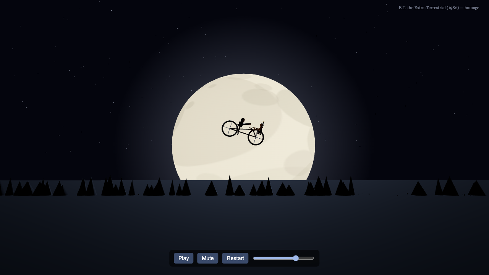

Custom Three.js Scene Rebuild
An iconic movie or TV moment, rebuilt as a self-contained offline Three.js web scene — submission-ready for scene bounties, portfolios, or your own project.

Delivered example — the E.T. (1982) "moon shot": 36s, 1280×720, offline single-file Three.js r185.
€49per scene · delivered by email · 5–7 days
What you get
- Self-contained offline
index.html (Three.js r185 inlined, no CDN, no runtime fetch)
- 20–45s scene with camera beats, timing, and an original Web Audio score (synthesized, never the film's music)
- Geometric silhouettes only — no likenesses, no ripped assets, no traced frames
sources.md provenance + concept note + preview screenshots- Deterministic
renderAt(seconds) — every frame reproducible for screenshots or grading
How it works
- Buy with card via Stripe Checkout (no account needed)
- Enter a 1–3 sentence scene brief and your delivery email at checkout
- We build the scene (primitives, silhouettes, synthesis — never likenesses or copied audio) and email the finished files with provenance docs
Track record
- Six scene rebuilds delivered on TaskMarket bounties: Raiders of the Lost Ark boulder run, The Shining corridor, Back to the Future clock tower, Ghostbusters rooftop, RoboCop boardroom, E.T. moon shot
- Every entry: geometry from primitives, Web Audio score, sources.md, verified offline and deterministic
Order a scene rebuild — €49
Payment via Stripe Checkout. You'll get a confirmation email with next steps; the finished scene is delivered by email.
← Back to store